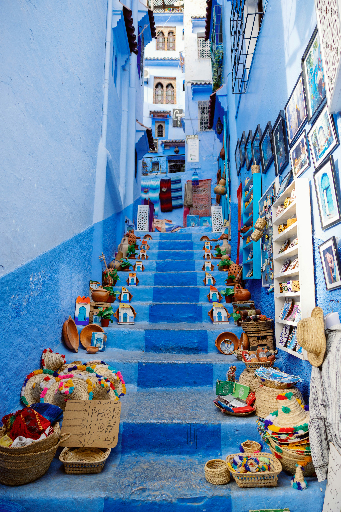
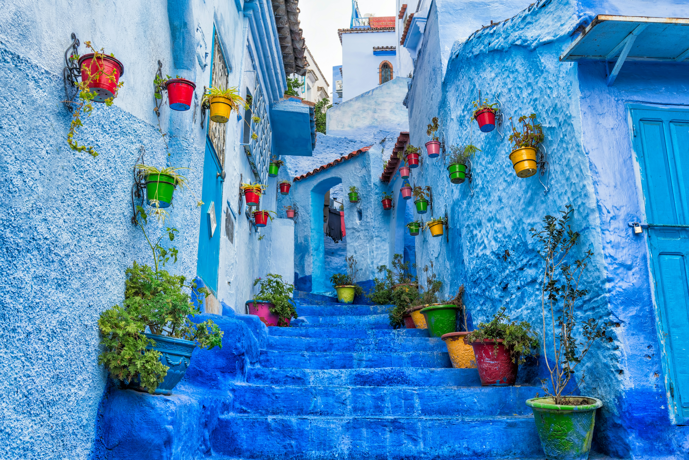
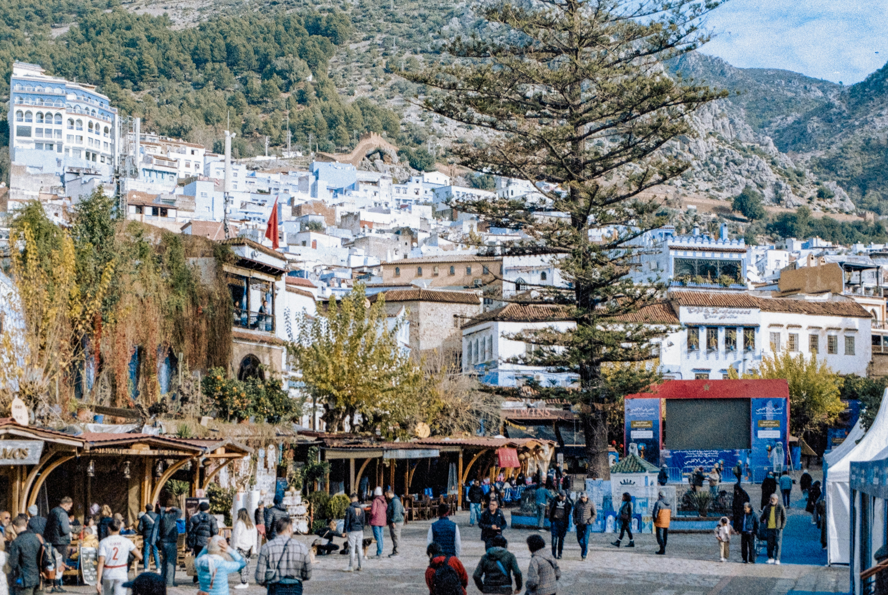

Bienvenue à Chefchaouen
Découvrez la perle bleue du Maroc, ses ruelles colorées, ses montagnes, ses paysages naturels et son artisanat traditionnel.
La Médina et les Ruelles Bleues
Chefchaouen, surnommée la ville bleue, est située au cœur des montagnes du Rif, au nord du Maroc. Sa médina est célèbre pour ses maisons peintes en différentes nuances de bleu, ses escaliers colorés et ses petites ruelles pittoresques. C'est un endroit unique qui attire les visiteurs grâce à son charme traditionnel et son atmosphère paisible.
Monuments Historiques
- La Kasbah de Chefchaouen : ancienne forteresse située au cœur de la médina, entourée de jardins et abritant un musée ethnographique.
- La Place Outa El Hammam : place principale de la médina, connue pour ses cafés, ses restaurants et son ambiance traditionnelle.
- La Grande Mosquée : monument historique reconnaissable à son minaret octogonal.
- Bab El Ain : ancienne porte de la médina permettant de découvrir les ruelles traditionnelles de la ville.
- Ras El Maa : source naturelle située à proximité de la médina, connue pour son eau fraîche et son cadre agréable.
Jardins et Musées
- Les jardins de la Kasbah : espaces verts paisibles situés à l'intérieur de l'ancienne forteresse.
- Le Musée de la Kasbah : musée présentant l'histoire, les traditions et le patrimoine de la région.
- Les jardins de Ras El Maa : espaces agréables pour se détendre près de la source naturelle.
- La Place El Haouta : petite place traditionnelle entourée de maisons bleues et de cafés.
Paysages et Excursions
Autour de Chefchaouen, explorez :
- Le Parc National de Talassemtane : espace naturel exceptionnel avec des forêts, des montagnes et des sentiers de randonnée.
- Les Cascades d'Akchour : magnifiques cascades entourées de paysages naturels et de montagnes.
- Le Pont de Dieu : formation rocheuse naturelle spectaculaire située dans la région d'Akchour.
Culture et Vie Locale
Chefchaouen est réputée pour son artisanat traditionnel : vêtements en laine, couvertures, poteries, objets en bois et produits artisanaux. Les souks de la médina permettent de découvrir les traditions de la région du Rif. La ville est également connue pour sa cuisine locale, notamment le tajine, le fromage de chèvre et les spécialités traditionnelles marocaines.
Galerie de Chefchaouen
Quelques paysages et monuments emblématiques de la perle bleue du Maroc :



